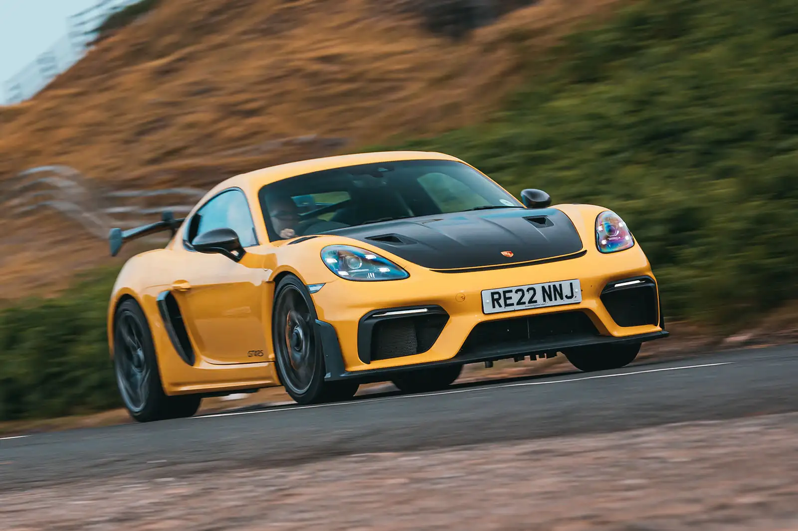
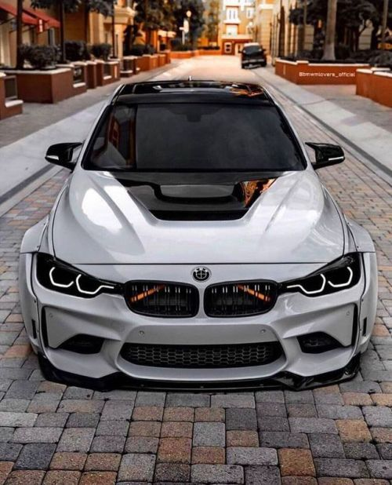

El Porsche 911 es un automóvil deportivo de lujo producido por el fabricante alemán Porsche AG, desde 1964. A través de los años, ha pasado por varias regeneraciones. De todas formas, muchas de las características del modelo original se conservan, como su configuración «todo atrás», su carrocería coupé fastback, el motor bóxer de seis cilindros y un interior con configuración 2+2 plazas. Desde la fundación de Porsche, la empresa solamente fabricaba el modelo Porsche 356 al que posteriormente reemplazó. Aunque fuese un coche notable, lo cierto era que el modelo basado en el proyecto del Volkswagen Tipo 1, comenzaba a demostrar señales de cansancio alrededor del final de los años 1950. Así, en este período y al mismo tiempo que invertía en las futuras líneas 356 B y C, Porsche comenzó el desarrollo de un modelo íntegramente nuevo
